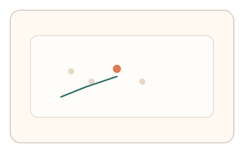
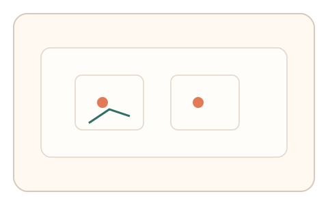
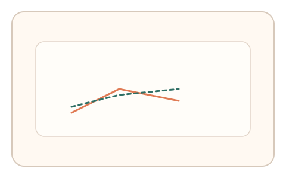

#146
F：意图/现实耦合 × 异步/随机插入（路径/预测误差）
已扩展
意图漂移检测
同一目标在流程中两次随机插入，比较注意力分布与路径一致性。
概念原文
同一目标在流程中被两次随机插入，系统比较两次注意力分布与路径一致性。
用“意图一致性”替代单次表现。
研究背景
真实用户的意图具有一致性但不会完全复制，注意力分布与路径会呈现相似‑非恒定的模式。通过两次插入对比可识别脚本或回放。
核心机制
- 在流程中两次插入同类目标任务。
- 记录两次的注意力分布与路径。
- 计算相似度与偏移量。
- 与基线区间比对。
用户流程
- 步骤 1：用户完成首次目标任务。
- 步骤 2：随机插入第二次同类任务。
- 步骤 3：系统比较注意力与路径一致性。
判定信号
注意力热区相似度
真实意图会保持一定一致性。
路径长度与停顿一致性
路径重复不会完全相同且存在微差。
判定逻辑
相似度需落在人类区间；过度一致或过度漂移判异常。
对抗面
- 脚本固定路径并重复
- 随机化路径伪装
防御与缓解
- 更换背景与干扰项
- 插入时间间隔拉开记忆
- 多任务叠加一致性检查
可达性与风险
减少干扰元素并提供较大目标。
- 疲劳导致路径漂移增大
- 界面复杂影响注意力判断
可视化状态

状态 1：首次插入
记录首次注意力分布与路径。

状态 2：再次插入
同类目标再次出现。

状态 3：一致性对比
比较两次热区与路径相似度。
参考资料
Visual attention
说明注意力分配与热区特性。
Saliency map
说明显著性与注意力热点。